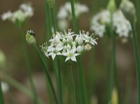

にらの生産量 都道府県ランキング
全13都道府県の順位と収穫量
にらの収穫量が全国で最も多いのは高知県で、1万6,100 tです。全国（5万5,200 t）の29%を占めます。

| 順位 | 都道府県 | 収穫量 | 全国に占める割合 |
|---|---|---|---|
| 1位 | 高知県 | 1万6,100 t | 29% |
| 2位 | 栃木県 | 8,060 t | 15% |
| 3位 | 茨城県 | 7,200 t | 13% |
| 4位 | 大分県 | 3,090 t | 5.6% |
| 5位 | 北海道 | 2,920 t | 5.3% |
| 6位 | 宮崎県 | 2,850 t | 5.2% |
| 7位 | 山形県 | 2,740 t | 5.0% |
| 8位 | 福島県 | 2,270 t | 4.1% |
| 9位 | 千葉県 | 2,160 t | 3.9% |
| 10位 | 群馬県 | 2,030 t | 3.7% |
| 11位 | 熊本県 | 1,340 t | 2.4% |
| 12位 | 福岡県 | 962 t | 1.7% |
| 13位 | 長崎県 | 476 t | 0.9% |
にらの生産量の推移（令和2年産〜令和6年産）
全国の収穫量は、令和2年産の5万7,000 tから令和6年産の5万5,200 tへ、3%減りました。期間中、1位は一貫して高知県です。
| 年 | 全国 | 1位 | 2位 | 3位 |
|---|---|---|---|---|
| 令和6年産 | 5万5,200 t | 高知県1万6,100 t | 栃木県8,060 t | 茨城県7,200 t |
| 令和5年産 | 5万5,100 t | 高知県1万5,300 t | 栃木県8,220 t | 茨城県6,970 t |
| 令和4年産 | 5万4,300 t | 高知県1万4,300 t | 栃木県8,320 t | 茨城県6,780 t |
| 令和3年産 | 5万6,300 t | 高知県1万4,300 t | 栃木県8,970 t | 茨城県7,680 t |
| 令和2年産 | 5万7,000 t | 高知県1万3,700 t | 栃木県1万200 t | 茨城県7,450 t |
この数字について
- 分類：ヒガンバナ科
- 全国の収穫量：5万5,200 t
- この数字が表すもの：収穫量（収穫された重量）
- 調査：作物統計調査 作況調査（野菜） 令和6年産
- 13県分を調査（調査していない県は順位に入りません）
にらの生産量について、よくある質問
- にらの生産量が日本一の都道府県はどこですか？
- 高知県です。作物統計調査 作況調査（野菜）（令和6年産）で1万6,100 tでした。
- にらの生産量ランキング2位・3位はどこですか？
- 2位は栃木県（8,060 t）、3位は茨城県（7,200 t）です。
- にらの生産量ランキング4位・5位はどこですか？
- 4位は大分県（3,090 t）、5位は北海道（2,920 t）です。にらの全13県の順位は上の表のとおりです。
- にらの全国の生産量はどれくらいですか？
- 5万5,200 t（令和6年産）です。